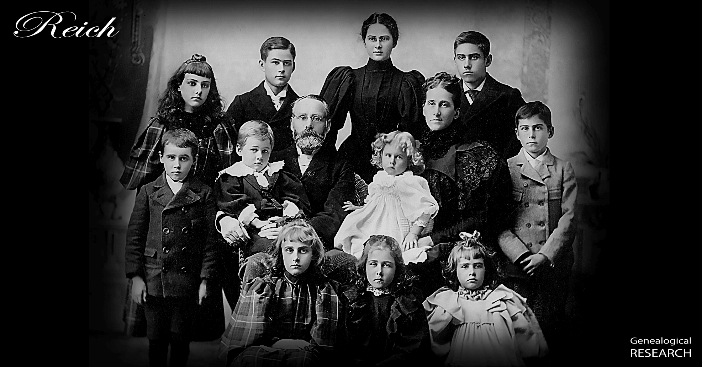

Reich Research

Javascript is disabled in your browser. This page relies on Javascript. Please enable Javascript in your web browser and refresh the page to view it.
Reich Research Articles and Memorials